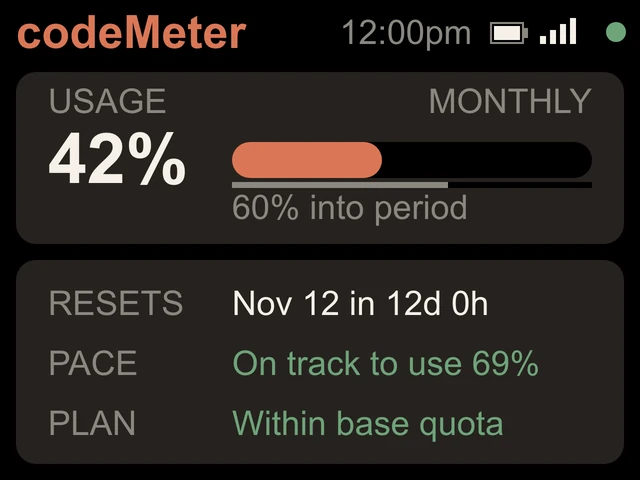

Claude Enterprise
Claude Enterprise, on your desk.
Enterprise accounts report a monthly pool. codeMeter shows how much of it you have used, when it resets, and where you will land.


On the screen
The monthly pool, read plainly.
- USAGE / MONTHLYThe percent of your monthly limit used, with a bar and a line for how far into the month you are.
- RESETSThe reset date and a countdown, like Nov 12 in 12d 0h.
- PACEA straight-line forecast: On track to use 69%. If the forecast passes 100%, it reads Over pace in amber. It waits until 10% of the period has passed before forecasting.
- PLANWithin base quota or Monthly usage, in plain words. Drawing from the monthly pool is normal, so it is not shown as an alarm.
How it reads it
The same numbers your account reports.
Once a minute codeMeter makes one tiny request with your token and reads the usage headers Claude sends back. On Enterprise and Team those headers describe a monthly limit, and codeMeter switches to the monthly screen by itself.
Your token stays on the device. There is no account with us and no server of ours in between.
Try it
Forecast your month.
For the whole team
Your logo on every desk.
Ordering for a group? We make a custom start-up screen with your logo and colours, with stands to match. See team rollouts.
FAQ
Questions.
Does it work with Claude Enterprise?
Yes. Enterprise accounts report monthly usage, and codeMeter shows the monthly percent, the reset date with a countdown, and a month-end forecast.
Does it need admin access?
No. Each person runs claude setup-token while signed in to their own account and pastes the token on the device.
Where is the token stored?
On the device only. It talks directly to Anthropic over TLS, plus GitHub for firmware updates, internet time servers and ip-api.com for the time zone.
Can we revoke a device?
Yes. Revoke its access from the Claude account settings. That works no matter who holds the device.